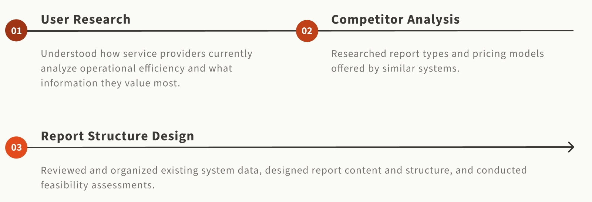
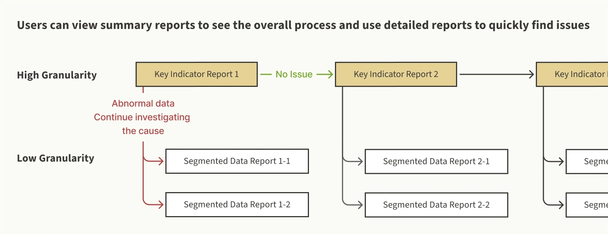
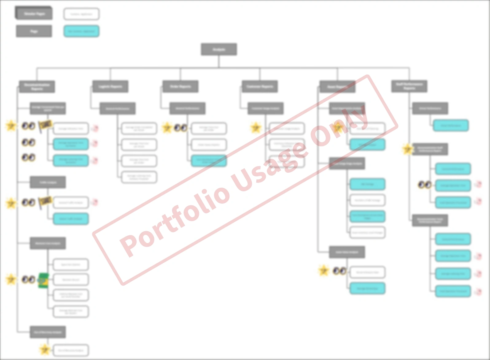

Business Goal: Increase subscription revenue
Attract clients to upgrade to higher-tier software plans to boost subscription income.
This project is under an NDA, so detailed information cannot be shared on public platforms.
KeepWell is a SaaS platform designed to streamline the decontamination and rental management of medical equipment, currently focusing on medical air mattresses. By combining QR code asset tags with medical devices, it helps European service providers manage their entire process — from on-site inventory and disinfection to orders, logistics, and customer management.

Unable to identified which part of the whole process needs optimization
The rental workflow is complex and involves many products. Without data support, providers rely on observation and staff feedback to assess efficiency, making it hard to find and fix bottlenecks.
Unable to analyze equipment replacement and maintenance records.
Replacement and maintenance are key cost factors for service providers. Without a systematic analysis, it's hard for them to track inventory, decide when to restock, and understand why equipment breaks.

Attract clients to upgrade to higher-tier software plans to boost subscription income.

Enhance plan differentiation and increase the appeal of advanced subscription tiers.

Ensure users can quickly locate issues in reports, identify process bottlenecks, and optimize operational efficiency.
Make sure users don't get lost among numerous reports.
The reports are divided into two levels of granularity:

The report structure includes 6 categories in total, 5 based on relevant KeepWell modules and 1 for employee efficiency analysis, focusing on service providers' key concerns such as consumable and maintenance costs, and product utilization, resulting in 36 reports in total.

During competitor research, we found that some systems offer a large number of reports and data views but lack a clear hierarchy and logical connections. As a result, users often get lost among various charts and struggle to identify which information truly matters for decision-making. In other words, these reports appear comprehensive but fail to translate into actionable insights.
From client interviews, we also learned that service providers tend to focus first on key accounting indicators, such as revenue, to decide whether further investigation is needed. This highlights that a clear structure and actionable guidance are far more important than simply displaying data. A well-designed report should not only present information but also point users toward meaningful decisions.
Design System Architecture Design and Organization